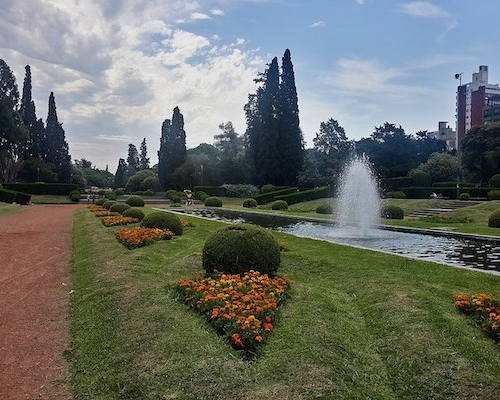
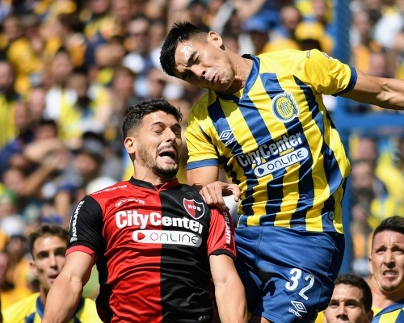
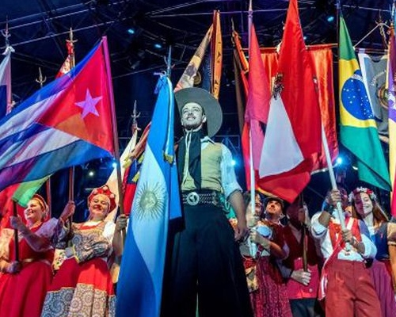

Some Places to Know
You will be able to enjoy these places alone, with your family or friends
Rosario, Argentina is renowned for its beautiful parks and green spaces that offer residents and visitors opportunities for recreation and relaxation. The main parks are Independence Park, Spain Park, Allem Park, and Urquiza Park. In those parks you will be able to have an escape from the bustling city, providing benches and shaded areas where visitors can relax, read a books, or enjoy a picnic.
Football (soccer) If you know an Argentine, you know the passion for soccer. Rosario is the cradle of the best of all time Leonel Messi. The city is home to two major football clubs, Rosario Central and Newell's Old Boys, which have a fierce rivalry and a dedicated fan base. Football matches in Rosario are known for their intense atmosphere and passionate supporters.
Due to immigration in Rosario, there is a great cultural variety. If you decide to come in November you will be able to enjoy the Night of Collectivities, with the participation of more than twenty foreign communities associations that show stands the typical things of their country such as dances, arts, and several typical dishes of food.